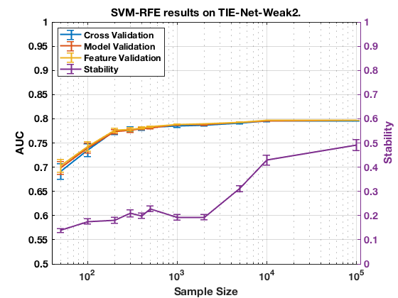

Performance on TIE-Net-Weak2 with SVM-RFE.
summary_perf('ErrNet', 2)
Figure 14. SVM-RFE results on TIE-Net-Weak2.
_____________________________________________

Table 14. SVM-RFE results on TIE-Net-Weak2.
____________________________________________
Sample_Size p_Converge p_Next Cross_Validation_AUC Model_Validation_AUC Feature_Validation_AUC
___________ __________ _________ ____________________ ____________________ ______________________
' 50 ' ' 0.000 ' ' 0.347 ' ' 0.691 +/- 0.016 ' ' 0.699 +/- 0.013 ' ' 0.703 +/- 0.013 '
' 100 ' ' 0.000 ' ' 0.270 ' ' 0.735 +/- 0.013 ' ' 0.740 +/- 0.010 ' ' 0.743 +/- 0.010 '
' 200 ' ' 0.000 ' ' 0.415 ' ' 0.775 +/- 0.006 ' ' 0.773 +/- 0.004 ' ' 0.776 +/- 0.004 '
' 300 ' ' 0.000 ' ' 0.430 ' ' 0.779 +/- 0.005 ' ' 0.776 +/- 0.004 ' ' 0.778 +/- 0.003 '
' 400 ' ' 0.000 ' ' 0.427 ' ' 0.780 +/- 0.004 ' ' 0.780 +/- 0.002 ' ' 0.781 +/- 0.002 '
' 500 ' ' 0.002 ' ' 0.390 ' ' 0.782 +/- 0.003 ' ' 0.781 +/- 0.002 ' ' 0.784 +/- 0.001 '
' 1000 ' ' 0.012 ' ' 0.400 ' ' 0.785 +/- 0.002 ' ' 0.788 +/- 0.000 ' ' 0.789 +/- 0.000 '
' 2000 ' ' 0.025 ' ' 0.338 ' ' 0.786 +/- 0.002 ' ' 0.788 +/- 0.001 ' ' 0.789 +/- 0.001 '
' 5000 ' ' 0.135 ' ' 0.350 ' ' 0.791 +/- 0.001 ' ' 0.792 +/- 0.001 ' ' 0.793 +/- 0.001 '
' 10000 ' ' 0.377 ' ' 0.377 ' ' 0.795 +/- 0.001 ' ' 0.796 +/- 0.000 ' ' 0.797 +/- 0.000 '
' 100000 ' ' NaN ' ' NaN ' ' 0.796 +/- 0.000 ' ' 0.797 +/- 0.000 ' ' 0.797 +/- 0.000 '
Sample_Size Cross_Stability Number_Features Feature_Stability
___________ ___________________ _____________________ ___________________
' 50 ' ' 0.138 +/- 0.008 ' ' 6.338 +/- 1.445 ' ' 0.005 +/- 0.000 '
' 100 ' ' 0.176 +/- 0.010 ' ' 6.004 +/- 2.990 ' ' 0.005 +/- 0.000 '
' 200 ' ' 0.181 +/- 0.011 ' ' 5.820 +/- 1.598 ' ' 0.007 +/- 0.001 '
' 300 ' ' 0.209 +/- 0.014 ' ' 12.236 +/- 3.890 ' ' 0.009 +/- 0.001 '
' 400 ' ' 0.199 +/- 0.012 ' ' 7.892 +/- 2.136 ' ' 0.008 +/- 0.001 '
' 500 ' ' 0.227 +/- 0.013 ' ' 9.220 +/- 3.769 ' ' 0.007 +/- 0.001 '
' 1000 ' ' 0.192 +/- 0.011 ' ' 13.100 +/- 4.085 ' ' 0.010 +/- 0.001 '
' 2000 ' ' 0.193 +/- 0.010 ' ' 14.232 +/- 3.070 ' ' 0.011 +/- 0.001 '
' 5000 ' ' 0.311 +/- 0.013 ' ' 17.374 +/- 0.536 ' ' 0.082 +/- 0.012 '
' 10000 ' ' 0.430 +/- 0.021 ' ' 23.976 +/- 0.548 ' ' 0.093 +/- 0.014 '
' 100000 ' ' 0.486 +/- 0.023 ' ' 24.068 +/- 0.423 ' ' 0.054 +/- 0.010 '